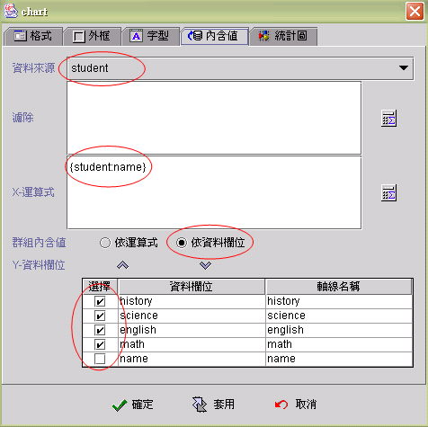

|

統計圖元件 (Chart component)

共同屬性 (common properties)
統計圖元件執行機制
(Chart component runtime mechanical)
統計圖元件資料彙集機制
(Chart component data aggregative mechanical)
內含值屬性 (data properties)
統計圖屬性 (chart properties)
動態更換圖示類別
(dynamically change chart type)
連結Buffered資料來源的統計圖元件(binding
buffered data source)
運算式屬性存取
(formula get/set properties)
統計圖元件
(Chart component) 連結資料來源，可依運算式 (by formula)
及依資料欄位 (by data field) 統計及繪製圖示(參閱 統計圖元件資料彙集機制
(Chart component data aggregative mechanical))。統計圖元件
(Chart component) 是多執行緒的元件 (multi-thread component)，透過設定資料來源(data
source) 讀取列(row fetch)，可以即時統計繪製已下載至客戶端
(client) 的資料，呈現動態的統計圖示 (參閱 統計圖元件執行機制
(Chart component runtime mechanical))。統計圖元件
(Chart component) 是一個可列印的元件 (printable component)
，只要在報表系統直接引用即可將統計圖輸出至報表。
統計圖元件執行機制
(Chart component runtime mechanical)
統計圖元件
(Chart component) 是多執行緒的元件 (multi-thread component)，在元件初始化(initial)
後，統計圖的資料運算統計 (data computing) 與圖形繪製 (paint)
以獨立的背景執行緒 (thread)
運作，不影響其他元件的系統流程，使用者可以得到最快速的回應。統計圖元件初始化(initial)
後，即由連結資料來源的首筆 (first) 開始讀入資料記錄，並逐筆進行過濾
(filter)、 運算 (calculate)、 統計 (statistic)，而根據資料來源
(data source) 讀取列 (row fetch) 的設定，每讀入讀取列數 (row fetch)
立即重繪 (repaint)
統計圖示，並在統計圖示的左上角顯示【資料載入中••】的訊息。當資料記錄到達尾筆時
(end of file)，【資料載入中••】的訊息會消失表示資料統計已完成。設計師可以根據資料量，適當的設定資料來源的讀取列數
(row
fetch)，使統計圖示的繪製達到最佳化。
▲Top
統計圖元件資料彙集機制
(Chart component data aggregative mechanical)
統計圖元件
(Chart component) 統計的資料，是由連結資料來源的首筆 (first
record) 開始，經過逐筆篩選 (filter) 、運算 (computed) 以至尾筆
(last record)。每筆資料記錄在統計時，須設定相關的 X 軸 (X-axis)、Y
軸
(Y-axis)、Z 軸 (Z-axis) 運算式 (formula)，一般而言 X 軸、Y 軸屬於統計資料項目分類，而
Z 軸則是資料值 (data)。由於統計的資料來源是資料記錄
(record)，為因應系統分析師規劃的各種資料表規格不同，統計圖元件對於
X 軸、Y 軸、Z 軸的資料對應方式，分為依運算式
(by formula) 及 依資料欄位 (by data field)
，以下將示範不同的資料記錄結構 (record data structure)
、相同的統計資料，分別以依運算式 (by formula) 及依資料欄位
(by data field) 的對映方式，產生完全相同的統計圖示。
統計的資料來源為學生成績，統計圖示依
X 軸為姓名、Y 軸為科目、Z 軸為成績的方式顯示。
-
依資料欄位
(by data field)：
資料表資料及資料結構
資料來源名稱：student
| name |
history |
science |
english |
math |
| Mary |
93 |
82 |
59 |
77 |
| John |
31 |
48 |
82 |
69 |
| Max |
29 |
92 |
86 |
49 |
| Tom |
88 |
53 |
80 |
72 |
| Sally |
92 |
91 |
88 |
89 |
統計圖元件屬性設定
-
資料來源 (data source)：student
-
X-運算式 (X-axis)：{student:name}
-
依資料欄位 (by data field)：核選
(Checked)
-
Y-資料欄位：核取
(checked) 除了name 以外的所有選擇欄

-
依運算式 (by formula)：
資料表資料及資料結構
資料來源名稱：student2
| name |
subject |
score |
| Mary |
math |
77 |
| John |
science |
48 |
| Mary |
english |
59 |
| John |
english |
82 |
| John |
math |
69 |
| Max |
history |
29 |
| Max |
science |
92 |
| Max |
english |
86 |
| Max |
math |
49 |
| Tom |
history |
88 |
| Tom |
science |
53 |
| Tom |
english |
80 |
| Tom |
math |
72 |
| Sally |
history |
92 |
| Sally |
science |
91 |
| Sally |
english |
88 |
| Sally |
math |
89 |
| Mary |
science |
82 |
| John |
history |
31 |
| Mary |
history |
93 |
統計圖元件屬性設定
-
資料來源 (data source)：student2
-
篩選條件
(filter)： 依條件運算式過濾資料，當條件為真時
(非零且非空字串) ，才進行統計。
-
X-運算式 (X-axis)：{student2:name}
-
依運算式 (by
formula)：核選 (checked)
-
Y-運算式：{student2:subject}
-
Z-運算式：{student2:score}
▲Top
內含值屬性 (data properties)
-
資料來源 (data source)：選取資料來源。
-
篩選
(filter)：不設定時 (blank)
，所有資料記錄 (record) 皆列入統計，否則運算式 (formula)
為真(true)時 (結果值不等於 0 且不為空字串)，該資料記錄才列入統計。
-
X-運算式 (X-axis)：統計圖的X軸的資料。
-
群組內含值 (data)：選擇統計資料的值來自於運算式
(formula) 或資料來源的欄位 (data field)。
-
Y-運算式
(Y-axis)：統計圖的 Y 軸的資料。
-
Z-運算式 (Z-axis)：統計圖的 Z 軸的資料。
▲Top
統計圖屬性
(Chart properties)
-
標題 (title)：統計圖的標題名稱。
-
圖形類別 (chart type)：選擇統計圖的型態，共有11種型態可以選擇。
-
Belt Chart Fancy
-
Belt Chart 2D
-
Belt Chart
-
Line Chart Fancy
-
Line Chart Fancy 2
-
Line Chart 2D
-
Line Chart 2D 2
-
Line Chart
-
Line Chart 2
-
Pie Chart
-
Pie Chart 2D
-
圖例 (legend)：選擇圖例位置。
-
轉換內含值 (data)：設定調整資料方式。
-
數字標籤 (value)：顯示統計項目的數值資料。
-
牆 (wall)：設定顯示背景牆。
-
背牆
(back wall)：顯示後方背景牆。
-
左牆 (left wall)：顯示左方背景牆。
-
底牆 (bottom wall)：顯示下方底版。
-
軸線標題 (item label)：設定顯示軸線統計項目標題。
-
X 軸
(X-axis)：顯示X軸統計項目標題。
-
Y 軸 (Y-axis)：顯示Y軸統計項目標題。
-
Z 軸 (Z-axis)：顯示Z軸統計項目標題。
-
軸線刻度 (axis-tick)： 設定顯示軸線刻度。
-
X 軸 Cal：顯示X軸刻度。
-
Y 軸 Cal：顯示Y軸刻度。
-
Z 軸 Cal：顯示Z軸刻度。
-
派圖尺寸比率 (pie rate)：調整派圖的大小比例。
-
派圖字串大小比率：
調整字串與派圖大小比例。
-
派圖高：寬比率：調整派圖的高度與寬度比例。
顯示結果：

▲Top
動態更換圖示類別
(dynamically change chart type)
設計師可以在執行期
(runtime) ，提供使用者更換統計的圖示類別 (chart type)
的介面，在使用者按選介面元件，產生事件時，以執行運算式
(formula) 事件的方式更換統計圖式。
SetProp("統計圖元件名稱",
"type", 類別代碼)
| 類別 |
類別代碼 |
類別 |
類別代碼 |
類別 |
類別代碼 |
|
Belt Chart Fancy |
1 |
Belt Chart 2D |
2 |
Belt Chart |
3 |
|
Line Chart Fancy |
21 |
Line Chart Fancy 2 |
22 |
Line Chart 2D |
23 |
|
Line Chart 2D 2 |
24 |
Line Chart |
25 |
Line Chart 2 |
26 |
|
Pie Chart |
31 |
Pie Chart 2D |
32 |
|
|
▲Top
連結Buffered資料來源的統計圖元件(binding
buffered data source)
Buffered資料來源
(Buffered data source) 在視窗起始時(initial)
，通常是沒有內含資料記錄 (empty)，而由其他的事件將資料載入。由於統計圖元件的資料彙集及繪製是獨立執行緒
(thread)，在載入Buffered資料來源的事件尚未完成所有程序時，統計圖元件的執行緒
(thread) 可能已經完成作業，因此在載入Buffered資料來源的事件最後，必須再連結
(link)一個引發統計圖元件重整統計資料的執行運算式 (formula) 事件，才能保證顯示的是正確資料。
-
SetProp("統計圖元件名稱",
"revalidate", 1) ：統計圖重整統計資料。
-
SetProp("統計圖元件名稱",
"repaint", 1)：統計圖以原有資料重繪。
-
SetProp("統計圖元件名稱",
"repaint", 2)：統計圖以原有資料即時重繪。
▲Top
運算式屬性存取
(formula get/set properties)
SetProp("元件名稱",
"屬性", 值) ：屬性設定。
SetProp("元件名稱",
"屬性", 值1, 值2)：屬性設定。
GetProp("元件名稱",
"屬性")：屬性讀取。
| Set
Properties |
| 屬性
(Properties) |
值1
(Value 1) |
值2
(Value 2) |
說明 (Descriptions) |
| enabled |
1 致能，0 失效 |
|
致能與失效。 |
| setfocus |
1 設定 Focus |
|
設定 Focus。 |
| visible |
1 顯示，0 隱藏 |
|
顯示與隱藏。 |
| repaint |
1 重繪，2
立即重繪 |
|
重繪。 |
| revalidate |
1 |
|
重新統計資料並重繪。 |
| title |
文字串 |
|
設定統計圖示的標題文字。 |
| type |
N 編號 N 的統計圖形 |
|
以編號 N 的統計圖形，重繪。
N = 1 Belt Chart Fancy。
N = 2 Belt Chart 2D。
N = 3 Belt Chart。
N = 21 Line Chart Fancy。
N = 22 Line Chart Fancy 2。
N = 23 Line Chart 2D。
N = 24 Line Chart 2D 2。
N = 25 Line Chart。
N = 26 Line Chart 2。
N = 31 Pie Chart 。
N = 32 Pie Chart 2D。 |
| bg |
RGB(red, green, blue) |
|
背景顏色。值1 必須以Formula 的 RGB() 運算式給值。
|
| fg |
RGB(red, green, blue) |
|
前景顏色。值1 必須以Formula 的 RGB() 運算式給值。
|
| x |
正整數值 |
|
左座標位置。 |
| y |
正整數值 |
|
上座標位置。 |
| w |
正整數值 |
|
元件寬度。 |
| h |
正整數值 |
|
元件高度。 |
| xy |
正整數值 |
正整數值 |
左(Value1) 上(Value2) 座標位置。 |
| wh |
正整數值 |
正整數值 |
元件寬(Value1) 高(value2)度。 |
| Get
Properties |
| 屬性
(Properties) |
傳回值
(Return value) |
說明 (Descriptions) |
| isenabled |
1 致能，0 失效 |
致能與失效。 |
| isvisible |
1 顯示，0 隱藏 |
顯示與隱藏。 |
| title |
文字串 |
統計圖示的標題文字。 |
| type |
N 編號 N 的統計圖形 |
目前統計圖形的編號。 |
| x |
整數值 |
左座標位置。 |
| y |
整數值 |
上座標位置。 |
| w |
整數值 |
元件寬度。 |
| h |
整數值 |
元件高度。 |
▲Top
Copyright © 2001~
2004 Probe Technology . All Rights Reserved.
Questions, comments,
and suggestions to Service@probe.com.tw
|